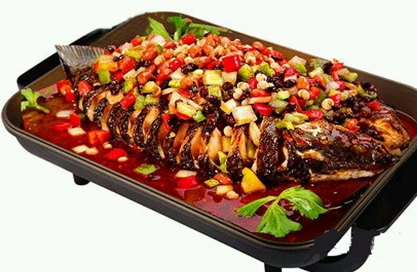

重庆万州烤鱼外焦里嫩，融合了鱼的细嫩，烧烤的火热，辅之以天然的香料，回味无穷。重庆万州烤鱼，口味品种多样，主要分为：麻辣味、泡椒味、 香辣味、豆豉味、蒜香味、豆花味等十几种，确保留住客户，美味的技术保证你的回头率。
重庆万州烤鱼，不但美味而且营养，其蛋白质的含量是猪肉的两倍，且属于优质蛋白，人体吸收率高。鱼种富含丰富的硫铵素、核黄素、尼克酸、维生素D 和一定量的钙、磷、铁等矿物质。鱼肉中脂肪含量虽低，但其中脂肪酸被证实有降糖、护心和防癌的作用。鱼肉中的维生素D、钙、磷能有效的预防骨质疏松 症。
主要培训的万州烤鱼分为以下几种：香辣烤鱼、泡椒烤鱼、麻辣烤鱼、豆豉烤鱼、蒜香烤鱼、豆花烤鱼。
烤鱼学习价格：3888任选以上两种学习、4888可以全学。